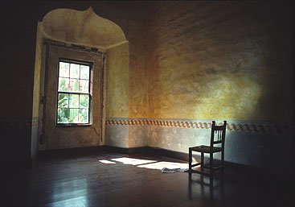

Current Restorations and Contributions

As part of our bicentennial celebrations we restored the original chapel and mission well. The museum has also been improved with the help of Dr. Ruben Mendoza and the
students of CSUMB. Our future goals include rebuilding both the guard tower (where the Spanish soldiers lived) and the missing wings of the mission convento whose foundations have been uncovered by Dr.
Mendoza. Obviously this is an expensive process and we deeply appreciate any donations you can make to the Mission.
If you wish to become a Benefactor of the Mission please call (831) 623-2127 for information.
Old Mission San Juan Bautista
Second & Mariposa Streets
P.O. Box 400
San Juan Bautista, California 95045
Text by Old Mission San Juan Bautista.
Photographs & Web Site Design by Ruben G. Mendoza, 1998.
All Rights Reserved.